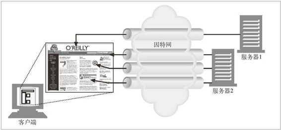
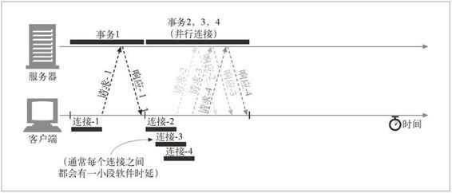

4.4 并行连接
如前所述，浏览器可以先完整地请求原始的 HTML 页面，然后请求第一个嵌入对象，然后请求第二个嵌入对象等，以这种简单的方式对每个嵌入式对象进行串行处理。但这样实在是太慢了！
如图 4-11 所示，HTTP 允许客户端打开多条连接，并行地执行多个 HTTP 事务。在这个例子中，并行加载了四幅嵌入式图片，每个事务都有自己的 TCP 连接。1
1 嵌入的组件不一定都在同一台 Web 服务器上，可以同多台服务器建立并行的连接。

图 4-11 页面上的每个组件都包含一个独立的 HTTP 事务
4.4.1 并行连接可能会提高页面的加载速度
包含嵌入对象的组合页面如果能（通过并行连接）克服单条连接的空载时间和带宽限制，加载速度也会有所提高。时延可以重叠起来，而且如果单条连接没有充分利用客户端的因特网带宽，可以将未用带宽分配来装载其他对象。
图 4-12 显示了并行连接的时间线，比图 4-10 要快得多。首先装载的是封闭的 HTML 页面，然后并行处理其余的 3 个事务，每个事务都有自己的连接。2 图片的装载是并行的，连接的时延也是重叠的。
2 由于软件开销的存在，每个连接请求之间总是会有一些小的时延，但连接请求和传输时间基本上都是重叠起来的。

图 4-12 4 个事务（并行）
4.4.2 并行连接不一定更快
即使并行连接的速度可能会更快，但并不一定总是更快。客户端的网络带宽不足（比如，浏览器是通过一个 28.8kbps 的 Modem 连接到因特网上去的）时，大部分的时间可能都是用来传送数据的。在这种情况下，一个连接到速度较快服务器上的 HTTP 事务就会很容易地耗尽所有可用的 Modem 带宽。如果并行加载多个对象，每个对象都会去竞争这有限的带宽，每个对象都会以较慢的速度按比例加载，这样带来的性能提升就很小，甚至没什么提升。3
3 实际上，多条连接会产生一些额外的开销，使用并行连接装载整个页面所需的时间很可能比串行下载的时间更长。
而且，打开大量连接会消耗很多内存资源，从而引发自身的性能问题。复杂的 Web 页面可能会有数十或数百个内嵌对象。客户端可能可以打开数百个连接，但 Web 服务器通常要同时处理很多其他用户的请求，所以很少有 Web 服务器希望出现这样的情况。一百个用户同时发出申请，每个用户打开 100 个连接，服务器就要负责处理 10 000 个连接。这会造成服务器性能的严重下降。对高负荷的代理来说也同样如此。
实际上，浏览器确实使用了并行连接，但它们会将并行连接的总数限制为一个较小的值（通常是 4 个）。服务器可以随意关闭来自特定客户端的超量连接。
4.4.3 并行连接可能让人“感觉”更快一些
好了，这样看来并行连接并不总是能使页面加载得更快一些。但如前所述，即使实际上它们并没有加快页面的传输速度，并行连接通常也会让用户觉得页面加载得更快了，因为多个组件对象同时出现在屏幕上时，用户能够看到加载的进展。4 如果整个屏幕上有很多动作在进行，即使实际上秒表显示整个页面的下载时间更长，人们也会认为 Web 页面加载得更快一些。
4 渐进式图片会先显示低分辨率的近似图形，然后再逐渐增加图片的分辨率，而随着渐进式图片应用的逐步增加，这种效果就更加明显了。